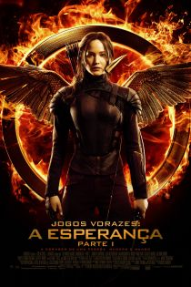
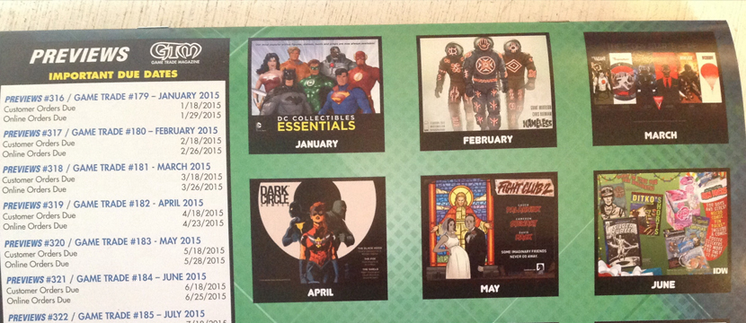
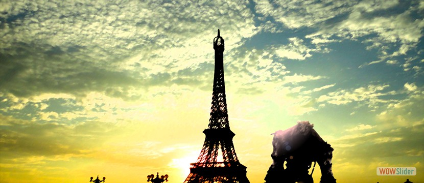
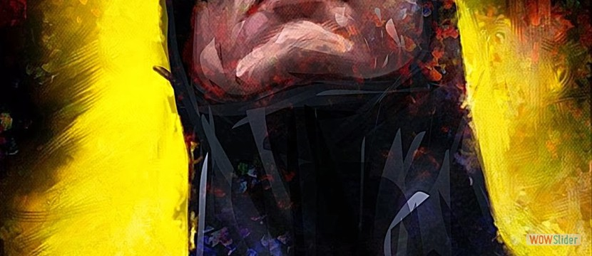
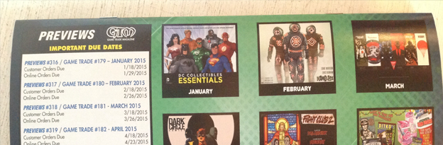

Em Cartaz

Ver trailer
Sinopse
Não recomendado para menores de 14 anos.
DUBLADO
Após ser resgatada do Massacre Quaternário pela resistência ao governo
tirânico do presidente Snow (Donald Sutherland), Katniss Everdeen (Jennifer
Lawrence) está abalada.
Temerosa e sem confiança, ela agora vive no Distrito
13 ao lado da mãe (Paula Malcomson) e da irmã, Prim (Willow Shields).
A
presidente Alma Coin (Julianne Moore) e Plutarch Heavensbee (Philip Seymour Hoffman)
querem que Katniss assuma o papel do tordo, o símbolo que a resistência precisa para
mobilizar a população. Após uma certa relutância, Katniss aceita a proposta desde que a
resistência se
comprometa a resgatar Peeta Mellark (Josh Hutcherson) e os demais Vitoriosos, mantidos
prisioneiros pela Capital.
TOP 5 do Dia
Noticia de Jogo
Noticia de Filme
Notica de Happy
Noticia de Filme
Noticia de Jogo
- All-New Marvel | Nova linha de HQs da Marvel chega em setembro de 2015
- Diretor sugere que Kratos pode migrar para outra mitologia
- Stripper interpreta tema natalino com os seios
All-New Marvel | Nova linha de HQs da Marvel chega em setembro de 2015
10/12/2014
HQ

Ainda não há confirmação do que o nome pode representar para as HQs da editora. Enquanto algumas especulações dizem que a Marvel pode fazer um reboot após as novas Guerras Secretas, que chegam em maio nos EUA, o nome também pode ser apenas um relançamento de HQs, com novas primeiras edições.
O Bleeding Cool também nota que a linha pode ser uma tática da Marvel para conquistar o primeiro lugar nas vendas em setembro, o único mês do ano no qual ela tradicionalmente perde para a DC Comics.